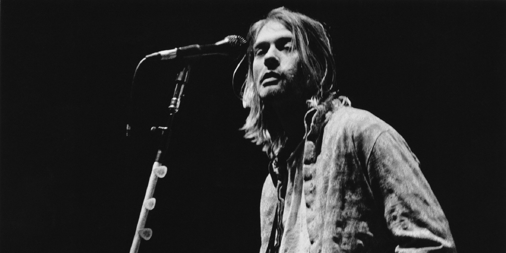
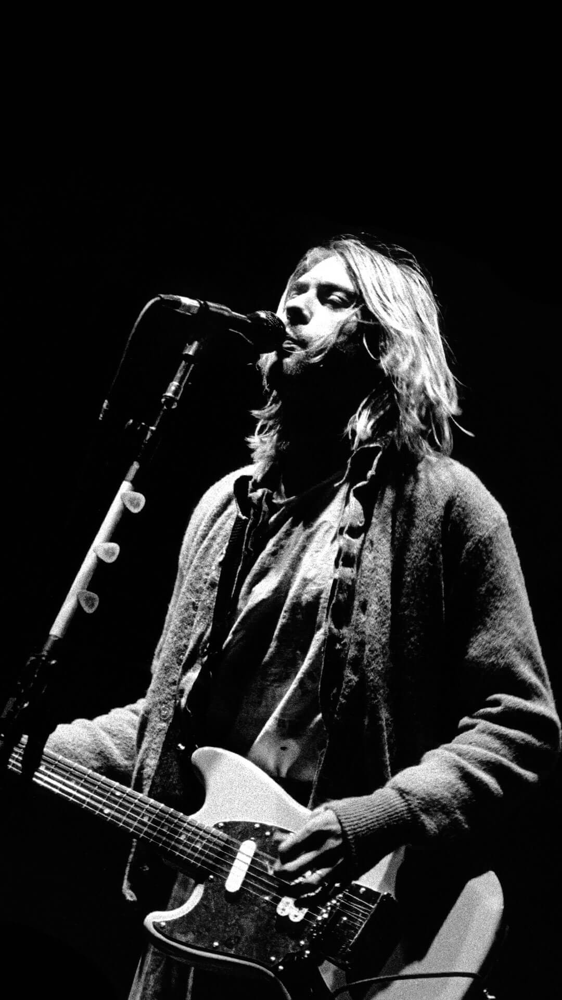
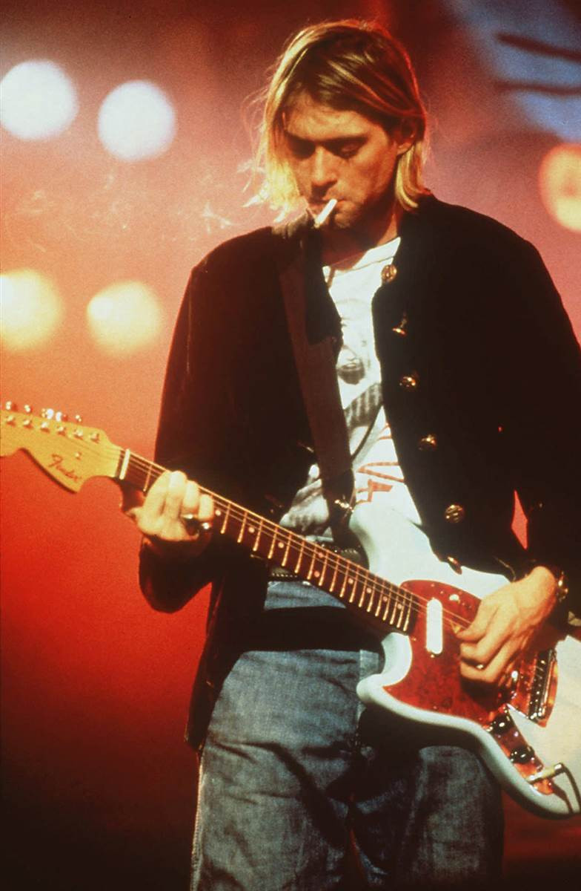

Kurt Donald Cobain
Kurt Donald Cobain (February 20, 1967 - April 5, 1994) was an American singer and musician. He is best known as a guitarist, primary songwriter and leader of the Nirvana rock band.
Through his furious songwriting and unsympathetic personality, Cobain's compositions expanded the thematic conventions of mainstream rock music. He often appeared as the publisher of
"Generation X" and has since been considered one of the most influential rock musicians in alternative music history.
He was Born in Aberdeen, Washington. Cobain, he formed the Nirvana Band in 1987 with Christie Nossalik and Aaron Berkhard as part of the Seattle music industry, later known as the grunge.
The main label is DGC. After signing with Records, Nirvana found global success with the song "Smells Like Teen Spirit" from their critically acclaimed second album, Nevermind (1991).
Although Cobain was hailed as the voice of Generation X after the sudden success of Nirvana, he resented it, believing that his message and artistic vision had been misinterpreted by the public.
In addition to "Smells Like Teen Spirit", Cobain wrote notable songs for Nirvana, including "About a Girl", "In Bloom", "Come as You Are", "Lithium", "Polly", "Something in the Way", "All Apologies"
and "Heart-Shaped Box".
During the later part of his life, Cobain struggled with chronic health problems such as heroin addiction and depression. He also struggled with personal
and professional reputation influences, including the attention of tabloid newspapers, and his 1992 marriage to musician Courtney Love. In March 1994, Cobain drank a combination of champagne
and intervention, and he later became involved in a detox program. In March 1994, Cobain drank a combination of champagne and intervention, and later became involved in a detox program.
Cobain was 27 years old when he died on April 8, 1994, at his home in Seattle. Police said that he shot himself in the head and was pronounced dead on April 5.
After his death, Cobain was inducted into the Rock and Roll Hall of Fame at their first qualifying in 2014 with members of the Nirvana band, Christie Nossalik and Dave Grol.
Rolling Stone added Cobain to their list of the 100 Greatest Guitar Players and 100 Greatest Singers of All Time. Cobain also peaked at number 7 on MTV's 22 Greatest Voices in Music listing.
In 2006, Cobain was ranked 20th on the list of the 100 Greatest Metal Singers Ever Created by Hit Parader.

